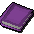
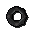
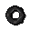
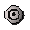

")
Faruqs Spielesammlung
Einführung

Aber Faruq ist sich durchaus darüber bewusst, was er verkauft: Gegenstände, die wandernde Abenteuer verwenden können, um ihre eigenen Spiele damit zu entwickeln. Obwohl viele seiner Waren anscheinen einen bestimmten Zweck erfüllen, dürften fantasiereiche Abenteurer keine Probleme damit haben, ihre eigenen Ideen für Spiele mit diesen Gegenständen zu verwirklichen.
Faruqs Spielesammlung
Die Spiele verkauft Faruq zu solch einem guten Preis, dass es sich lohnt, gleich mehrere - oder alle - Gegenstände zu kaufen. In Faruqs Agonomikon erfahrt ihr, wie man seine Waren benutzt.
| Spiel | Funktion |
 Würfelbeutel |
Der Beutel beinhaltet: 1W6, 2W6, 1W4, 1W8, 1W10, 1W12, 1W20, 1W10 oder 2W10 (für 100-seitige Ergebnisse). |
 Magischer Schädelball |
Verfügt über drei Einstellungen: Ja oder Nein, Aktivitätsideen oder zufällige Farbauswahl. |
   Versteckringe * |
Es gibt drei Arten dieser Ringe: Einen, der sucht. Einen, der gesucht wird. Einen, der beides kann. Ein suchender Ring meldet sich, wenn ein zu suchender Ring in der Nähe ist. Ihr erfahrt nicht, welches Clanmitglied den zu suchenden Ring trägt - oder wie weit es entfernt ist -, denn um das zu erfahren, müsst ihr euch selbst anstrengen. |
 Markierungssamen |
Damit kann man Wegweiser pflanzen - entweder mit Richtungsangabe oder ohne. |
 Klickzähler |
Klickt darauf, um den Zähler zu erhöhen - einfacher geht es nicht. |
|  Taschendetektiv* |
Damit könnt ihr eurem Clan beweisen, dass ihr nichts in euren Taschen habt (bzw. nur den Zähler, oder beides). |
 Stoppuhr |
Sie macht Tick und Tack. |
 Rennstiefel * |
Diese Stiefel frieren euch auf der Stelle fest, bevor ein Wettrennen beginnt. sodass alle Teilnehmer gleichzeitig loslaufen können. |
 Starttröte* |
Diese mystische Tröte beschwört einen Kobold, der den Start eines Rennens ankündigt (danach können alle Mitglieder eures Clans, die Rennstiefel tragen, loslaufen). |
 Wahlhut * |
Kann umgekrempelt werden, um ihn von rot auf blau zu ändern (und umgekehrt). |
 Zählkugel* |
Diese mysteriöse Kugel wird nur dafür verwendet, die Anzahl der roten und blauen Hüte zu zählen. |
 Oculuskugel |
Eine schwere Kugel, die euch RuneScape neu betrachten lässt. Nützlich für Regisseure von Machinima-Videos. |
* Diese Gegenstände können nur verwendet werden, wenn man ein Mitglied eines Clans ist.
Oculuskugel

Um die Kugel zu benutzen, müsst ihr sie ausrüsten, sie in eurem Ausrüstungsfenster rechtsklicken und dann 'Hineinschauen' auswählen. Dadurch befindet ihr euch dann im 'Zielmodus' der Oculuskugel. Bitte beachtet, dass euer Charakter sich nicht bewegen kann, während ihr die Oculuskugel benutzt.
Die Kugel hat drei verschiedene Modi: Zielen, Fokus und Feinsteuerung. Die folgenden Features sind bei allen drei Modi gleich:
- Beenden - Um nicht mehr in die Kugel hineinzuschauen, drückt einfach Esc.
- In einen anderen Modus wechseln - F1. Dabei werden gespeicherte Einstellungen gelöscht.
- Chatfenster ein-/ausschalten - Drückt F2, um das Chatfenster ein- und auszuschalten. Dann könnt ihr Nachrichten verfassen, die im Spielfenster zu sehen sind.
- Hilfsfenster an-/ausschalten - Indem ihr die Leertaste drückt, könnt ihr das 'Hilfsfenster' im Spielfenster, den Kompass rechts oben und die Gespeicherte-Positionen-Anzeige ausblenden.
- Kamera nach Norden/Süden/Osten/Westen bewegen - Wenn ihr die Tasten W, S, A und D drückt, könnt ihr die Kamera in jede der vier Himmelsrichtungen bewegen. Der "Fokus" der Kamera wird gleichzeitig angepasst.
- Kamera nach oben/unten bewegen - Wenn ihr die Tasten Q und E drückt, könnt ihr die Kamera nach oben oder unten bewegen. Der "Fokus" der Kamera wird gleichzeitig angepasst.
- Ansicht drehen - Wenn ihr die Pfeiltasten benutzt, bleibt die Kamera in der gleichen Position, aber die Ansicht dreht sich von einem statischen Punkt aus. Eure Kamera dreht sich 20 Mal, bevor sie zur Ausgangsposition zurückkehrt.
- Kameraposition speichern, Gespeicherte Positionen erneut abspielen, Gespeicherte Positionen löschen - F6, F7 und F8. Dadurch könnt ihr eine Reihe von Kameraeinstellungen abspeichern und sie dann flüssig nacheinander abspielen. Benutzt die Ziel- und Fokusmodi, um die gewünschte Kameraeinstellung zu finden, und speichert sie dann über F7. Ihr könnt bis zu 8 Positionen abspeichern und über F8 abspielen. Über F6 löscht ihr die Kameraeinstellungen wieder.
- Kamera nach Norden/Süden/Osten/Westen bewegen - Wenn ihr die Tasten W, S, A und D drückt, könnt ihr die Kamera in jede der vier Himmelsrichtungen bewegen. Die Kamera bleibt dabei auf die gleiche Stelle ausgerichtet.
- Kamera nach oben/unten bewegen - Wenn ihr die Tasten Q und E drückt, könnt ihr die Kamera nach oben oder unten bewegen. Die Kamera bleibt dabei auf die gleiche Stelle ausgerichtet.
- Fokus nach Norden/Süden/Osten/Westen bewegen - Mit den Pfeiltasten könnt ihr den Fokus in alle vier Himmelsrichtungen bewegen.
- Kameraposition speichern, Gespeicherte Positionen erneut abspielen, Gespeicherte Positionen löschen - F6, F7 und F8. Dadurch könnt ihr eine Reihe von Kameraeinstellungen abspeichern und sie dann flüssig nacheinander abspielen. Benutzt die Ziel- und Fokusmodi, um die gewünschte Kameraeinstellung zu finden, und speichert sie dann über F7. Ihr könnt bis zu 8 Positionen abspeichern und über F8 abspielen. Über F6 löscht ihr die Kameraeinstellungen wieder.
- Kamera nach Norden/Süden/Osten/Westen bewegen - Wenn ihr die Tasten W, S, A und D drückt, könnt ihr die Kamera in jede der vier Himmelsrichtungen bewegen. Der "Fokus" der Kamera wird gleichzeitig angepasst.
- Kamera drehen - Über die Pfeiltasten könnt ihr die Kamera auf einen bestimmten Punkt ausrichten. Die Kamera fokussiert dann auf diesen Punkt.
Anmerkung: Die Oculuskugel könnt ihr mit nach Daemonheim nehmen.

Weitere Artikel in Diverse Anleitungen
|
|
|
Weiterführende Informationen Wenn euch dieser Artikel nicht weitergeholfen hat, könnt ihr in den folgenden Kapiteln der RuneScape-Webseite mehr Informationen finden:
|
|